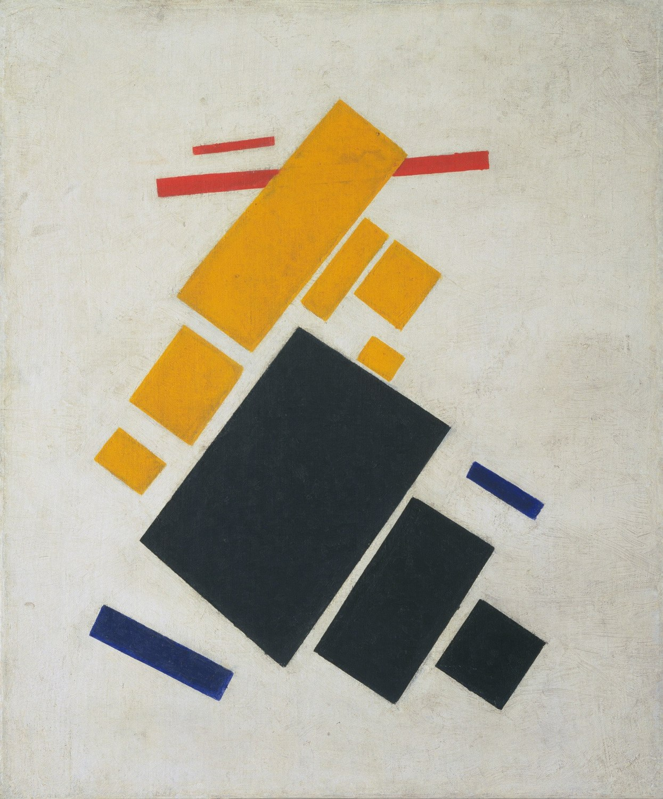
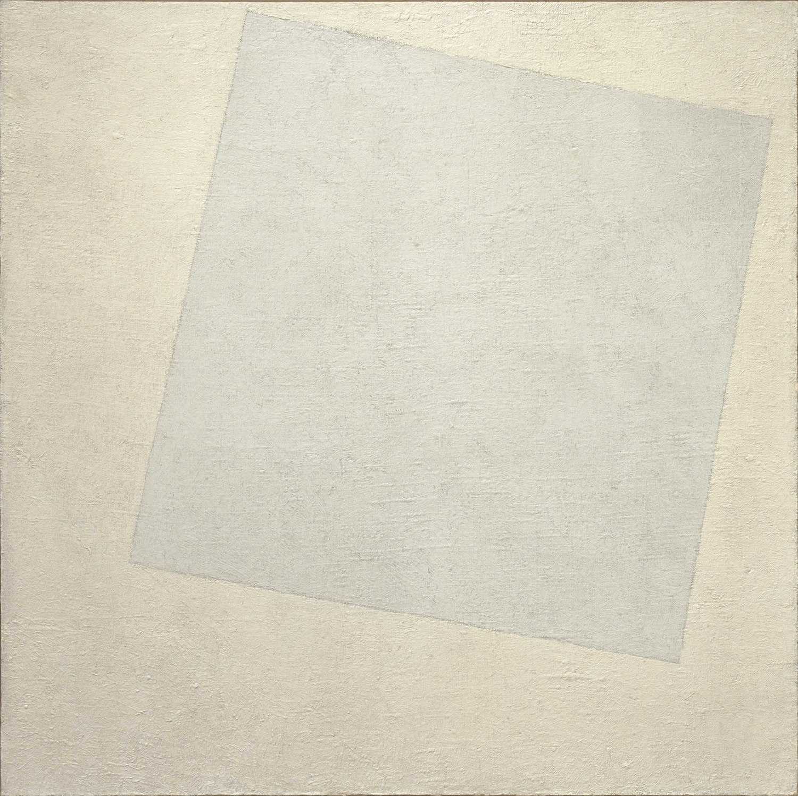

1915 · 절대주의의 선언
절대주의(Suprematism)는 카지미르 말레비치가 1915년 명명한 러시아의 독립 추상미술 체계다. 핵심은 자연·인물·사물을 묘사하는 일을 중단하고 사각형·원·십자가·선과 제한된 색채 같은 순수한 조형요소를 통해 ‘순수한 감각 또는 지각의 우위’를 추구하는 것이었다.
그림이 외부 세계의 무엇을 닮아야 한다는 조건을 제거한다.
사각형·원·십자가·직선 같은 가장 단순한 기하학을 사용한다.
흰 바탕 위 형태가 실제 중력이나 지평선 없이 떠다닌다.
대상의 의미보다 색·균형·긴장·움직임 그 자체를 느끼게 한다.
기하학적이지만 본래 목적은 공학설계보다 비물질적·정신적 자유에 가까웠다.
말레비치는 입체주의의 분해와 미래주의의 역동성을 결합한 인물·농민 그림을 제작한다.
무대·의상 디자인에서 검은 사각형과 연결되는 급진적 기하학적 이미지가 등장한다.
말레비치가 절대주의 작품군을 공개하고 《검은 사각형》을 특별한 위치에 설치한다.
검정·빨강·노랑·파랑의 기하학적 형태들이 흰 공간에서 역동적으로 부유한다.
색채 대비까지 거의 소거하며 비대상 회화를 극단까지 밀어붙인다.
말레비치는 절대주의를 회화 밖의 공간·건축적 사유로 확장한다.


| 항목 | 절대주의 | 구성주의 |
|---|---|---|
| 핵심 인물 | 카지미르 말레비치 | 블라디미르 타틀린, 알렉산드르 로드첸코, 류보프 포포바 등 |
| 목표 | 비대상 형식과 순수 감각의 자율성 | 재료·구조·기능을 실제 생산과 사회에 연결 |
| 회화 | 중요한 최종 매체 | 점차 회화를 넘어 디자인·건축·사진·직물로 |
| 기하학 | 비물질적·정신적 공간 | 물질·구조·정보·생산의 조직 |
| 한 문장 | “예술을 사물에서 해방하라.” | “예술을 실제 생활 속에서 작동시켜라.” |
| 중심지·전개 방식 | 특징 | 대표 화가 |
|---|---|---|
| 페트로그라드 — 0.10 전시와 선언 | 1915년 전시를 계기로 대상 재현을 버리고 사각형·원·십자가의 비대상 언어를 급진적으로 제시했다. | 카지미르 말레비치, 올가 로자노바 |
| 비텝스크 — UNOVIS 교육·집단 작업 | 학교와 작업 집단을 통해 절대주의를 회화 밖의 그래픽, 도자기, 건축 모형과 도시 디자인으로 확장했다. | 엘 리시츠키, 일리야 차슈니크, 니콜라이 수에틴 |
절대주의는 추상회화의 한 종류가 아니라 사물의 재현을 제거하고 색면, 사각형, 원, 십자가 같은 기본 형태로 “순수한 감각”을 찾으려 한 러시아 아방가르드다.
본문에 이름이 등장하는 주요 화가는 아래처럼 대표작 한 점과 함께 읽어야 한다. 작품은 해당 사조의 핵심 특징을 실제 화면에서 확인하도록 고른 것이다.
재현을 거의 0으로 낮추고 회화가 색과 형태 자체에서 시작할 수 있음을 선언한다.
색면이 중력 없는 공간을 가로지르며 절대주의의 역동적인 비대상 구성을 보여준다.
차이를 극도로 줄여 형태와 공간의 감각만 남기는 절대주의의 급진성을 보여준다.
색의 밀도와 대비만으로 화면을 구성해 말레비치와 다른 절대주의의 색채 가능성을 보여준다.
절대주의의 기하학을 건축적 공간과 그래픽의 언어로 확장한다.
비텝스크의 젊은 세대가 절대주의의 기본 형태를 독자적인 색면 관계로 발전시킨다.
절대주의가 회화에 머물지 않고 일상 물체와 생산 디자인으로 옮겨 간 방식을 보여준다.